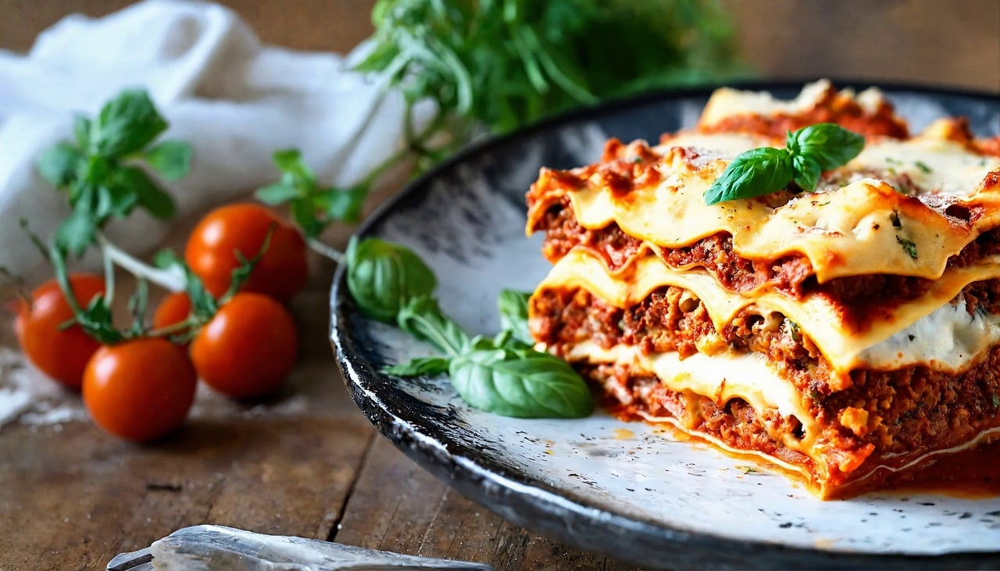

Lasagne Bolognese
55 min
fortgeschritten
13.07.2024
| 1 Schuss | Olivenöl (für die Form) |
| 12 Stk | Lasagneblätter |
| 200 g | Gouda (gerieben, zum Bestreuen) |
| 100 g | Emmentaler (gerieben, zum Bestreuen) |
Für die Bechamelsauce
| 80 g | Butter |
| 80 g | Mehl |
| 800 ml | Milch |
| 1 Prise | Pfeffer (weiß) |
| 1 Prise | Salz |
| 1 Prise | Muskat |
| 1 | Lorbeerblatt |
Für die Bolognesesauce
| 400 g | Rinderfaschiertes |
| 1 Stk | Knoblauchzehe |
| 1 Schuss | Öl |
| 1 Stk | Karotte |
| 1 Dose | Tomaten |
| 5 EL | Tomatenmark |
| 3 EL | Ketchup |
| 1 Prise | Basilikum |
| 1 Prise | Oregano |
| 1 Prise | Thymian |
| 1 Prise | Salz |
| 1 Prise | Pfeffer |
Zubereitung
Gesamtzeit ca. 55 Minuten
Zuerst die Bolognesesauce zubereiten: Dafür Zwiebeln und Knoblauch schälen und fein hacken. Die Karotten schälen und raspeln. Dann Öl in einem Topf erhitzen, Faschiertes darin gleichmäßig anrösten und Zwiebeln, Knoblauch und Karotten zugeben und weiter anbraten. Tomaten und Tomatenmark sowie das Ketchup, Basilikum, Oregano, Thymian, Salz und Pfeffer hinzugeben und auf kleinster Stufe ca. 10 Min. köcheln lassen. Anschließend die Bechamelsauce herstellen: Dafür Butter in einem Topf zerlassen, Mehl zufügen und sofort mit einem Schneebesen umrühren. Jetzt ganz langsam unter ständigem Rühren die Milch zufügen. Langsam aufkochen und rühren bis die Sauce dicklich ist. Sodann mit Pfeffer, Salz und Muskat würzen. Für die Lasagne eine Auflaufform mit Olivenöl einfetten. Nun abwechselnd die Lasagneblätter und Bolognesesauce einschichten. Mit den Lasagneblättern beginnen, danach die Sauce usw. abwechselnd schichten. Ganz zum Schluss mit der Bechamelsauce abschließen und frisch geriebenen Käse draufgeben. Im vorgeheizten Ofen bei 180° C Heißluft ca. 30 Minuten backen.
Rezept erstellt von
 Max M.
Max M.